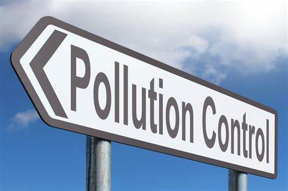
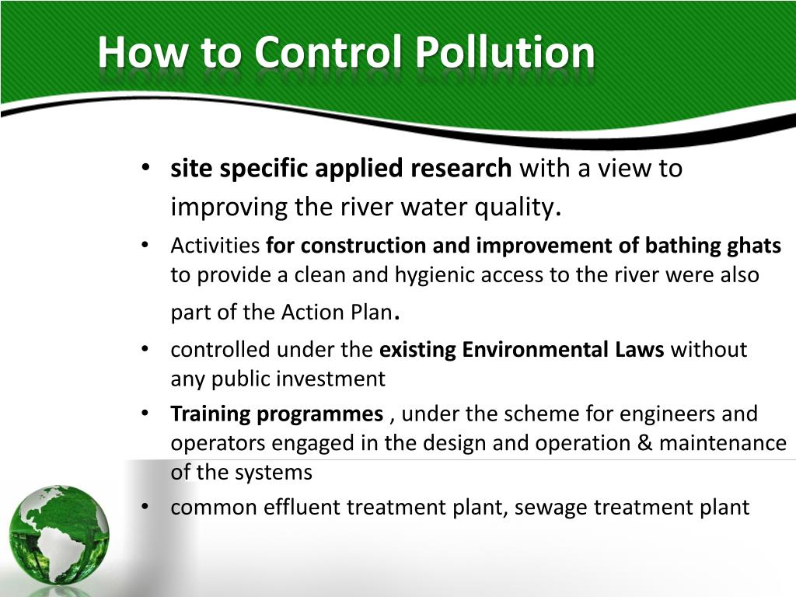

The Central Pollution Control Board (CPCB) provides technical services to the Ministry of Environment and Forests.
The CPCB also promotes cleanliness of streams and wells in different areas of the states by prevention, control and
abatement of water pollution.
What are the Indicators of water Pollution in India
The indicators of water pollution for the various rivers in India are: i. BOD (bio-chemical oxygen demand mg/l)
which is the amount of oxygen in mg needed by bacteria to oxidise one litre of organic waste.
5.Pollution Control

Pollution control is the process of reducing or eliminating the release of pollutants into the environment.
It is regulated by various environmental agencies which establish pollutant discharge limits for air, water, and land.
The Central Pollution Control Board (CPCB) provides technical services to the Ministry of Environment and Forests.
The CPCB also promotes cleanliness of streams and wells in different areas of the states by prevention, control and abatement
of water pollution. Get details of environmental standards, programmes, projects, etc. Find information on the boards functions
such as preparing manuals, maintain guidelines and organising trainings. Users can get details of the members of the board,
organisational structure, CPCB team, zonal offices, etc. Downloadable forms are also available.

How to control Pollution? (10 Ways)
(1) By means of equipments, apart from disposal of pollutants, recycling of waste could also be done.
(2) The generated pollutants from industries must be arrested before they are passed into the air.
(3) There are some industries which collect the dust and convert the same into saleable goods.
(4) The metal oxides and metals such as Cr, V, Cd, Cu, and Fe etc. can be easily absorbed by
serpentine mineral or bark of some trees and thus effluent can be free from metallic species.
(5) For reducing the noise pollution, suggestions given above should be adopted at once.
(6) The Govt. should be persuaded to provide cleaner fuels for manufacture of smokeless
coal briquettes by low temperature carbonization of poor quality lignites available locally.
(7) The Govt. should provide facilities to increase hydroelectric power wherever possible and bio
gas production for rural areas to reduce pollution.
(8) The garbage in big cities should be treated with cobalt rays. This can reduce the pollution load to about 60% in cities.
(9) Govt. should encourage scientific societies and scientific newspapers to create awareness among people about pollution and environment.
(10) Organic waste solid can be composted. The poisonous waste should be buried in the well-protected areas.